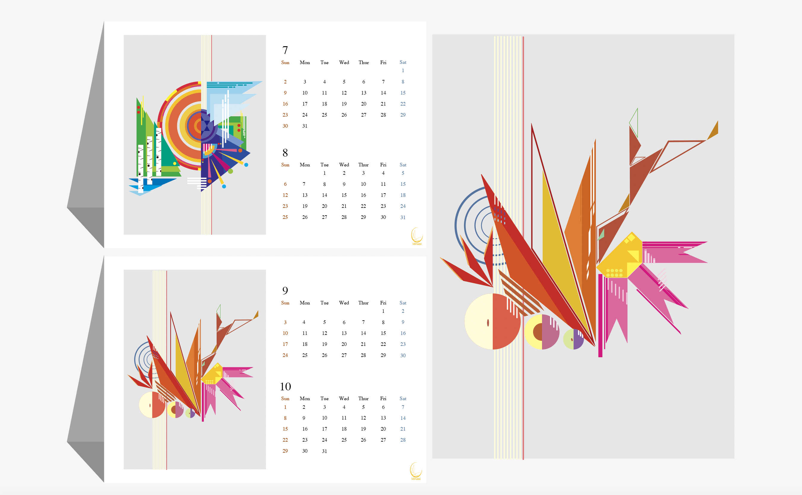
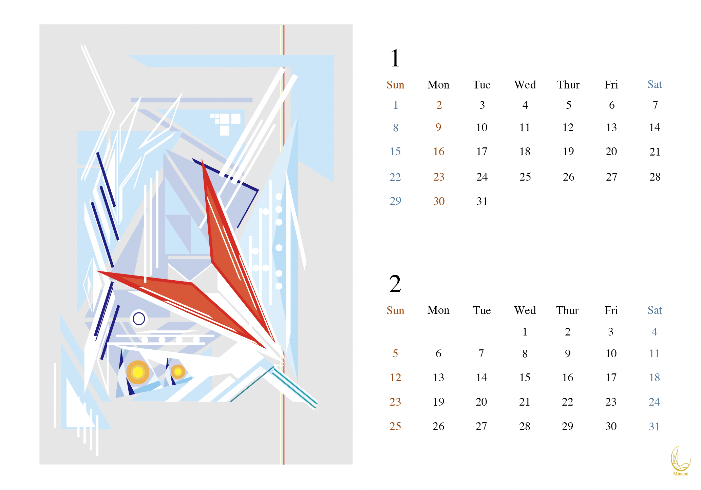
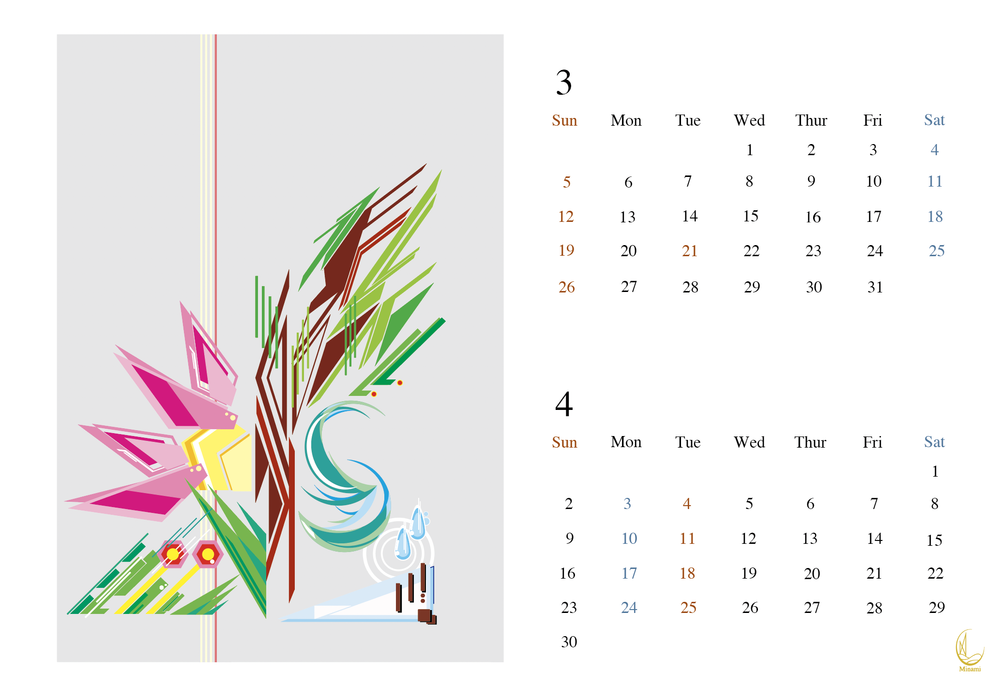
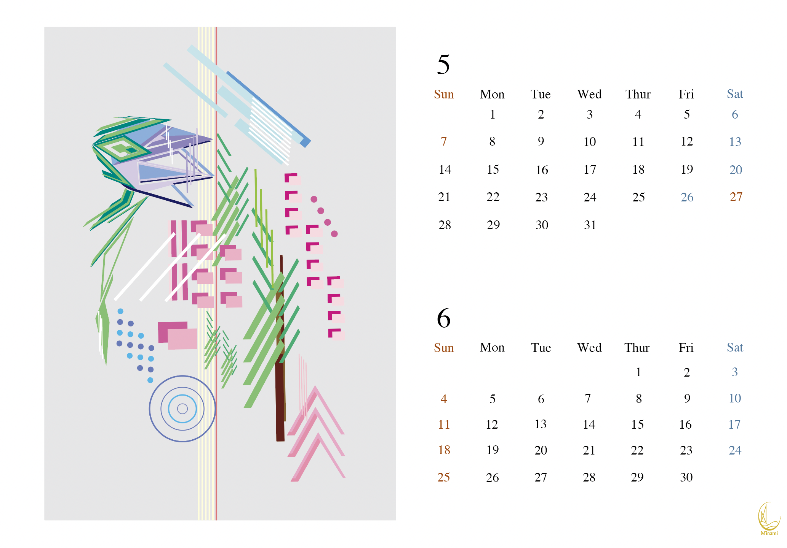
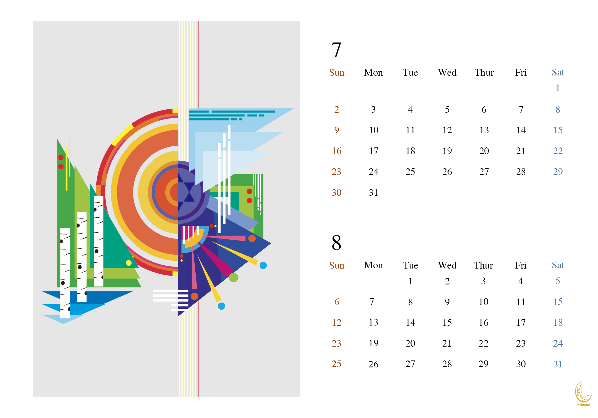
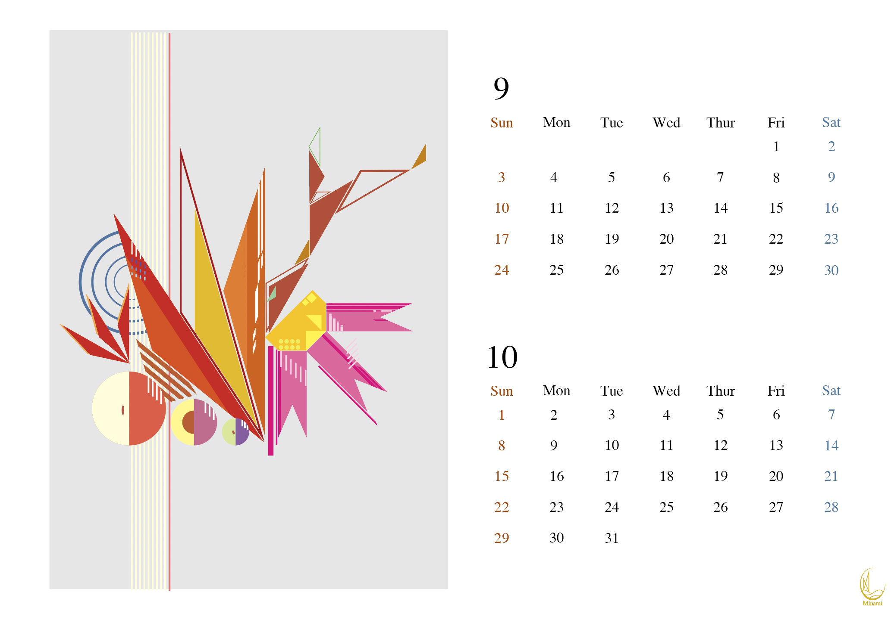
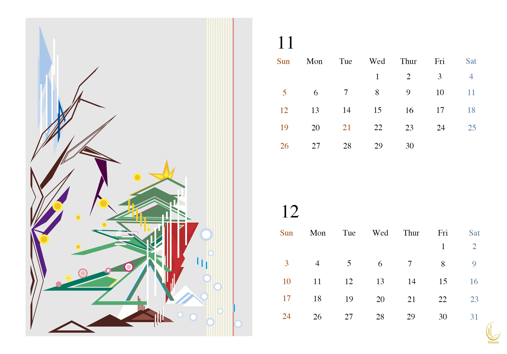

Original-Product
南区の季節ごとのモチーフを幾何学図形で表現した卓上カレンダー。

January and February

たくさんの雪が降る南区の1月、2月。
この季節になると寒さ、雪、氷をイメージする。
南区には国際スキー場、藻岩山スキー場、などスキーが盛んだ。
冬といえばスキーも楽しみたい。
さらに、冬の雪あかりも開催される。
March and April

雪解けが進み、一気に春らしさが見えてくる4月、5月。
景色には緑が多くなってゆき、花も姿を見せるようになる。
特にの季節は風が強い印象がある。
雪がまだ少し残っているようだ。
May and June

少しずつ暖かくなり、花たちがさらに色づき始める5月、6月。
南区では他の地域に比べて桜の見頃が遅い。
この季節では札幌市の花である鈴蘭が見頃だそうだ。
北海道には梅雨がないとは言われているが、最近は雨が多い気がするのは気のせいだろうか。
July and August

春が終わり、日差しが強くなる7月、8月。
近年の札幌は北国だとは思えないほどの暑さだ。
この暑さのせいか、緑色が綺麗に見える。
こんな暑い日には真っ白いシラカバの木を見るのも良い。
南区でも、真駒内や藻岩などで花火大会が行われるそうだ。
September and October

暑さがやっとおさまり、過ごしやすくなりってゆく9月、10月。
緑色だった景色が段々と赤色に染まってゆく季節。
秋といえば南区の花であるコスモスを思い浮かべる。
南区では果物狩りが行われているところもあり、この季節はりんご、プラム、ぶどうが旬らしい。
November and December

少し前まで過ごしやすかった季節だが、再び雪の季節がやってくる11月、12月。
色づいていた木々は葉の衣を落とし、代わりに雪の衣を着る
少しずつ雪が降り始めるが、ここ数年は12月でも雪が少なく感じる
子どもたちにとってクリスマスは一大イベントだ